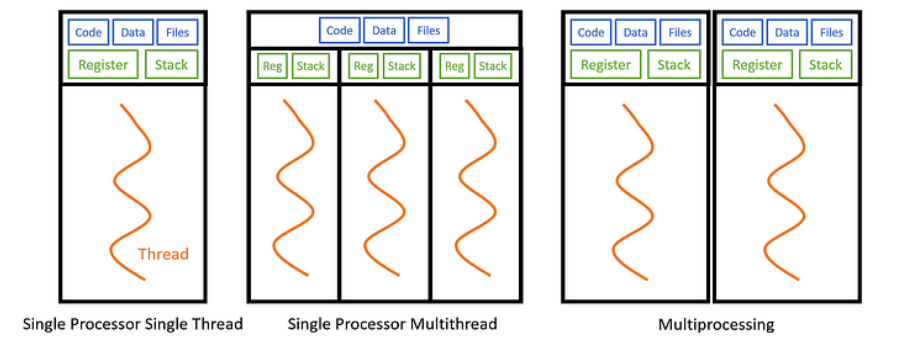
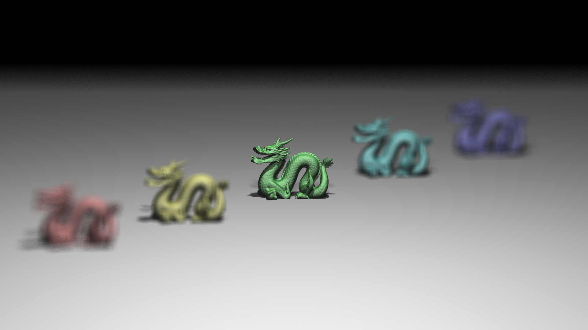
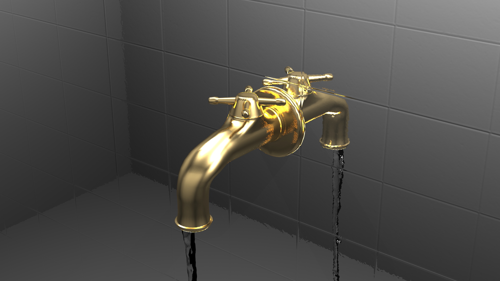

Welcome to my project blog. For this assignment I decided to push the limits of my custom C++ Ray Tracer by exploring the world of high performance computing. Ray tracing is a rendering technique that simulates the physical behavior of light to generate photorealistic images. It traces the path of light as pixels in an image plane and simulates the effects of its encounters with virtual objects. This process is incredibly computationally expensive because a single scene can require millions of rays to be calculated. However the beauty of ray tracing lies in its independence. The calculation of one pixel does not depend on the calculation of another which makes it an embarrassing parallel problem. This characteristic makes it the perfect candidate for multi threading optimization.
Before diving into the implementation details and the results of my experiments it is crucial to understand the fundamental concepts of parallel computing that underpin this project. Specifically we need to distinguish between Multi Processing and Multi Threading as they offer different approaches to concurrency within an Operating System.

In the context of an Operating System a Process is an instance of a computer program that is being executed. It contains the program code and its current activity. Each process has its own independent memory address space. This means that if you were to use Multi Processing to parallelize a task you would be running multiple instances of the program. While this offers strong isolation it comes with a significant drawback for an application like a ray tracer. Since processes do not share memory they would each need their own copy of the scene data including all the geometry textures and acceleration structures. For complex scenes this would lead to a massive waste of RAM and the communication between these processes would require slow Inter Process Communication mechanisms like pipes or sockets.
Multi Threading on the other hand occurs within a single process. A thread is the smallest sequence of programmed instructions that can be managed independently by a scheduler. Threads within the same process share the same data segment code segment and open files. This shared memory model is what makes multi threading so powerful for rendering. All my threads can access the exact same read only scene data without duplication. However each thread maintains its own Registers and Stack memory which allows them to execute different parts of the code simultaneously without interfering with each other. By utilizing the std thread library in C++ I can spawn multiple workers that utilize the multiple cores of my CPU to render different parts of the image at the same time effectively dividing the total render time by the number of active threads.
Two of the most critical factors determining the performance of a parallel renderer are Load Balancing and Cache Efficiency. While throwing more threads at a problem usually helps, how those threads access memory and distribute work determines whether you get a 2x speedup or a 10x speedup.
Load balancing refers to distributing work evenly across all available CPU cores so that no core sits idle while others are still working. In ray tracing, the time it takes to render a pixel varies wildly. A pixel hitting a diffuse wall is cheap to calculate, while a pixel hitting a glass sculpture requires recursive refraction and reflection rays.
My Static Row Sharing strategy failed specifically because of this variance. In scenes like Galactica, the spaceship is in the center of the image. The threads assigned to the top and bottom rows rendered empty space and finished instantly, leaving the middle threads to do all the heavy lifting alone. This creates a "convoy effect" where the entire render waits on the slowest thread.
By switching to Dynamic Scheduling (Row, Square, or Pixel), I ensured that as soon as a thread finishes a task, it grabs the next available unit of work. This keeps my Intel Core i5-12400F's 12 logical threads saturated at 100% usage throughout the entire render, drastically reducing total render time.
The second major factor is memory access. My CPU has 18 MB of Smart Cache, which is incredibly fast compared to the main RAM. When a CPU core needs data (like a triangle's coordinates or a texture's color), it first checks the cache. A "Cache Hit" means the data is already there (fast), while a "Cache Miss" means it has to fetch it from slow RAM.
Ray tracing inherently has good spatial locality: rays fired through adjacent pixels tend to hit the same objects and access the same memory addresses.
This is why I implemented Dynamic Square Sharing. By assigning threads to process 32x32 pixel tiles, I ensure that a single core works on a localized area of the image. This maximizes the chance that the BVH nodes and triangle data loaded into the L1/L2 cache for the first pixel will still be needed for the next pixel. In contrast, Pixel Dynamic sharing spreads threads randomly across the image or creates contention, potentially flushing the cache more often and reducing performance despite having perfect load balancing.
To evaluate the performance of different threading strategies I used my own custom built Ray Tracer. Writing a renderer from scratch allowed me to have complete control over the memory management and the execution pipeline. I optimized the core engine using several advanced techniques to ensure that the baseline performance was already high before applying multi threading.
First I implemented a Bounding Volume Hierarchy or BVH. This is a tree based acceleration structure that organizes the geometric objects in the scene. Without a BVH the renderer would have to test every single ray against every single triangle in the scene which would make rendering complex models like the dragon or the spaceship impossible in real time. The BVH allows the ray to skip huge portions of empty space and only test intersection against objects that are likely to be hit.
Secondly I utilized SIMD instructions which stands for Single Instruction Multiple Data. I used the SSE4.1 instruction set to vectorize my linear algebra operations. This allows the CPU to perform mathematical operations on 4 float values simultaneously in a single clock cycle. For example when calculating a dot product or a cross product the CPU can process the x y and z components in parallel rather than sequentially.
All performance benchmarks were conducted on my personal desktop equipped with an Intel Alder Lake processor. Understanding the hardware architecture is vital for interpreting the results as the core count directly influences the optimal number of threads.
| Component | Details |
|---|---|
| Processor | 12th Gen Intel Core i5 12400F |
| Architecture | Alder Lake S |
| Core Count | 6 Performance Cores (0 Efficient Cores) |
| Thread Count | 12 Logical Threads |
| Cache | 18 MB Intel Smart Cache |
| Max Frequency | 4.40 GHz |
The core of this research project was to implement and compare four distinct strategies for distributing the rendering workload among the available threads. The goal was to find the method that provides the best load balancing while minimizing the overhead of synchronization. The work unit in this context is the pixel or a group of pixels that need to be colored.
This is the most primitive approach to parallelization. I divide the height of the image by the total number of threads to calculate a chunk size. Each thread is then assigned a fixed contiguous block of rows to render. For example if I am rendering a 1080p image with 4 threads Thread 0 handles rows 0 to 269 Thread 1 handles 270 to 539 and so on.
While this method has zero synchronization overhead during the rendering loop it suffers from a major flaw known as the Load Imbalance problem. Render scenes are rarely uniform. The top half of an image might depict a simple blue sky which is very fast to compute while the bottom half might contain a refractive glass object which requires deep recursion and many shadow rays. In this scenario the threads assigned to the sky will finish almost instantly and sit idle wasting CPU cycles while the threads assigned to the glass object struggle to finish. This results in poor overall performance.
To address the shortcomings of the static approach I implemented Dynamic Row Sharing using an atomic
counter. Instead of pre assigning rows each thread enters a loop where it atomically increments a global
next_scanline variable to claim a row index. Once it finishes rendering that row it
requests another one.
This technique acts as a self balancing mechanism. Faster threads that finish simple rows quickly will simply request more work automatically helping out the slower threads. This ensures that all cores remain active until the entire image is complete drastically reducing idle time compared to the static method.
Row based splitting is good but it doesn't account for spatial locality. Long horizontal rows span across the entire image potentially accessing widely different parts of the scene geometry and textures. This can lead to poor CPU cache performance. Dynamic Square Sharing divides the image into small tiles for example 32 by 32 pixels.
Threads atomically claim the next available tile index. This method combines the load balancing benefits of dynamic scheduling with improved cache coherency. Rays fired through a small square tile are highly likely to hit the same objects and access adjacent texture memory which increases the probability of L1 and L2 cache hits significantly improving execution speed.
This is the most granular approach possible. Threads do not claim rows or tiles but instead atomically increment a counter for every single pixel in the image. While this guarantees the most perfect theoretical load balancing because no thread ever does more than one pixel more work than another it introduces a massive synchronization overhead.
For a 1920 by 1080 image there are over 2 million pixels. This means the atomic variable is locked incremented and unlocked 2 million times per frame. In scenes where pixel calculation is fast this overhead can actually make the render slower than coarser methods. However in scenes where every pixel takes a long time to compute the overhead becomes negligible relative to the trace time.
The following table displays render times in milliseconds (ms). Lower is better.
| Method | 4 Threads | 8 Threads | 12 Threads | 16 Threads |
|---|---|---|---|---|
| Scene: Focusing Dragons (1920x1080, 100 samples) | ||||
| Row Dynamic | 49340 | 26796 | 26085 | 25785 |
| Row Static | 74168 | 41184 | 33852 | 29998 |
| Square Dynamic | 47284 | 30050 | 26080 | 26534 |
| Pixel Dynamic | 47129 | 29461 | 25808 | 26069 |
| Scene: MyTap Final (1920x1080, 256 samples) | ||||
| Row Dynamic | 263300 | 175687 | 151709 | 155771 |
| Row Static | 294933 | 189056 | 164834 | 162409 |
| Square Dynamic | 261159 | 173653 | 152879 | 156988 |
| Pixel Dynamic | 264211 | 176726 | 151030 | 153712 |
| Scene: Galactica (1280x720, 100 samples) | ||||
| Row Dynamic | 24387 | 14998 | 12930 | 13037 |
| Row Static | 56227 | 35708 | 24436 | 21275 |
| Square Dynamic | 23333 | 13976 | 12232 | 12652 |
| Pixel Dynamic | 23762 | 14592 | 12494 | 12569 |

Focusing Dragons
Galactica Dynamic

MyTap Final
The results from my benchmarks provide a clear picture of how different threading strategies interact with the underlying hardware and the specific nature of ray tracing workloads. By correlating the timing data with the implementation details, several key patterns emerge regarding load balancing, synchronization overhead, and memory access patterns.
The most dramatic data point in my results is the performance gap in the Galactica scene with 4 threads. Row Static took 56227 ms, while Row Dynamic took only 24387 ms. This represents a 2.3x speedup purely by changing the scheduling algorithm.
In src/main.cpp, the static strategy calculates
rows_per_thread = camera.resy / thread_count and assigns a rigid range
[start_y, end_y) to each thread. The Galactica scene features a central spaceship
surrounded by empty space. The threads assigned to the top and bottom rows processed empty space
(background color lookups) and finished almost immediately. Meanwhile, the threads assigned to the
middle rows had to traverse the BVH and shade complex geometry. Because the fast threads could not
"steal" work from the slow threads, the total render time was dictated entirely by the slowest thread.
The Row Dynamic method uses a shared atomic counter:
std::atomic<int> next_scanline(0). Threads continuously increment this counter to
fetch the next available row. In the Galactica scene, this allowed the threads that finished the empty
background rows to immediately jump in and help render the spaceship, distributing the heavy workload
across all cores.
My results show that Square Dynamic (Tiled) generally outperforms Pixel Dynamic, particularly in lighter scenes. For example, in Galactica (12 threads), Square Dynamic finished in 12232 ms compared to Pixel Dynamic's 12494 ms. While small, this difference highlights the cost of atomic operations.
In the pixel_dynamic implementation, the atomic variable next_pixel is
incremented for every single pixel. For a 1920x1080 image, this results in over 2 million
atomic lock-unlock cycles per frame, creating significant bus contention. The
square_dynamic method, however, processes pixels in 32x32 blocks. This
reduces the synchronization overhead by a factor of 1024. Furthermore, this method improves
Spatial Locality. Pixels within a small tile usually hit the same scene objects. This
means the relevant BVH nodes and texture data loaded into the L1/L2 cache for the first pixel in a tile
are likely still hot for the subsequent pixels. The scattered access pattern of
pixel_dynamic effectively destroys this cache coherency.
The MyTap scene was computationally the heaviest, taking ~151 seconds even with 12
threads. This is due to the material properties defined in mytap_final.json. The scene
utilizes Conductor (mirror-like) and Dielectric (glass-like)
materials.
In src/ray_trace.cpp, the trace_rec function handles these materials
recursively. A Dielectric material triggers both a reflection ray and a refraction ray
(unless total internal reflection occurs). This branching factor, combined with a recursion depth of 6,
causes the number of rays traced per pixel to explode exponentially compared to simple diffuse surfaces.
This high computational cost per pixel masks the scheduling overhead, which explains why
pixel_dynamic performed surprisingly well in this specific scene, the math heavily
outweighed the atomic locks.
My test system is an Intel Core i5-12400F, which has 6 Performance cores and supports 12 logical threads via Hyper-Threading. The data shows strong scaling up to 12 threads, but a plateau or regression at 16 threads. For instance, in the MyTap Row Dynamic test, the time increased from 151709 ms (12 threads) to 155771 ms (16 threads).
Since the CPU can only physically execute 12 threads simultaneously, launching 16 threads forces the OS to time-slice them. This introduces Context Switching overhead, where the CPU must save and restore register states to switch between active threads. Additionally, 16 threads fighting for the same memory bandwidth likely saturated the bus and caused cache thrashing, where threads actively evicted each other's data from the shared L3 cache. This confirms that for CPU-bound tasks like ray tracing, the thread count should match the logical core count of the hardware.
The results from my multi-threading evaluation demonstrate that while dynamic scheduling solves the load balancing problem, it eventually hits a memory bandwidth wall. To push performance further, future optimizations must focus on data locality and instruction-level parallelism. Below are the proposed strategies for the next iteration of the ray tracer.
The first major improvement is to refine the "Square Dynamic" strategy into a fully Cache-Coherent Tile Rendering system. Currently, threads write to a global image buffer and read randomly from the scene heap, which causes frequent cache misses.
In this proposed system, each thread would be assigned a "Tile" and a dedicated Local Framebuffer that fits entirely within the CPU's L1 or L2 cache. All intermediate pixel calculations would occur in this super-fast local memory. Only when a bucket is fully rendered would the data be written back to the main system memory in a single continuous burst. This minimizes "false sharing" (where threads invalidate each other's cache lines) and drastically reduces main RAM latency.
My current renderer uses SIMD (SSE4.1) to speed up vector math for a single ray. A more advanced technique is SIMD Packet Tracing. Instead of tracing one ray at a time, we can bundle coherent rays into a "packet".
Using AVX or SSE instructions, we can then intersect 4 or 8 rays against scene geometry simultaneously. Because rays from adjacent pixels travel in almost the same direction, they will likely traverse the BVH tree together, allowing us to amortize the cost of fetching node data from memory across multiple rays. This effectively multiplies the throughput of the intersection engine.
Currently, every pixel receives the same number of samples, regardless of its complexity. This is inefficient. A blue sky converges to a noise-free color in just a few samples, while a glass refractive object might need hundreds.
Adaptive Sampling introduces a variance check. We can fire a small initial batch of rays and measure the standard deviation of the pixel's color. If the variance is low (the pixel is stable), we stop tracing. If it is high (the pixel is noisy), we continue firing rays up to the maximum count. This ensures computational power is spent only where it actually improves image quality, potentially reducing render times by 50% or more for simple scenes.
The most radical architectural change would be to implement a Wavefront Path Tracing architecture. Traditional recursive ray tracers suffer from "branch divergence", one ray might hit a wall (diffuse), while its neighbor hits glass (refraction), causing the CPU pipeline to stall as it switches tasks.
In a wavefront design, we do not trace a path to completion in one go. Instead, we break the rendering loop into separate stages (queues): Logic, Material, and Shadow. We generate millions of rays and sort them into these queues. For example, we process all diffuse bounces together, then all shadow rays together. This ensures that the CPU always executes the same instruction on massive blocks of data, maximizing cache usage and SIMD efficiency.